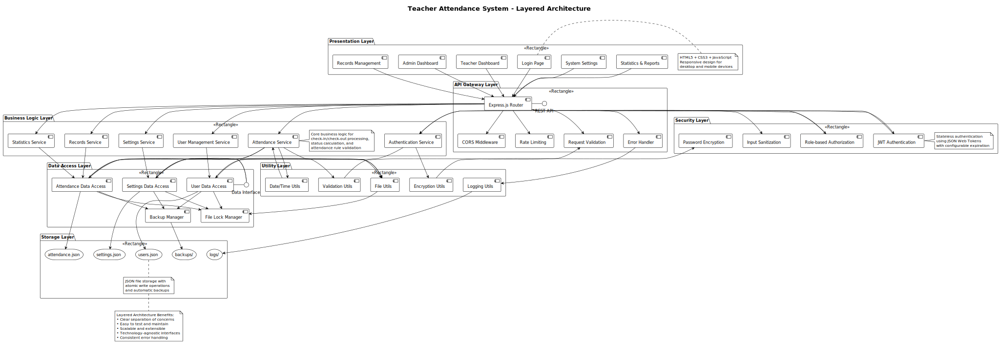
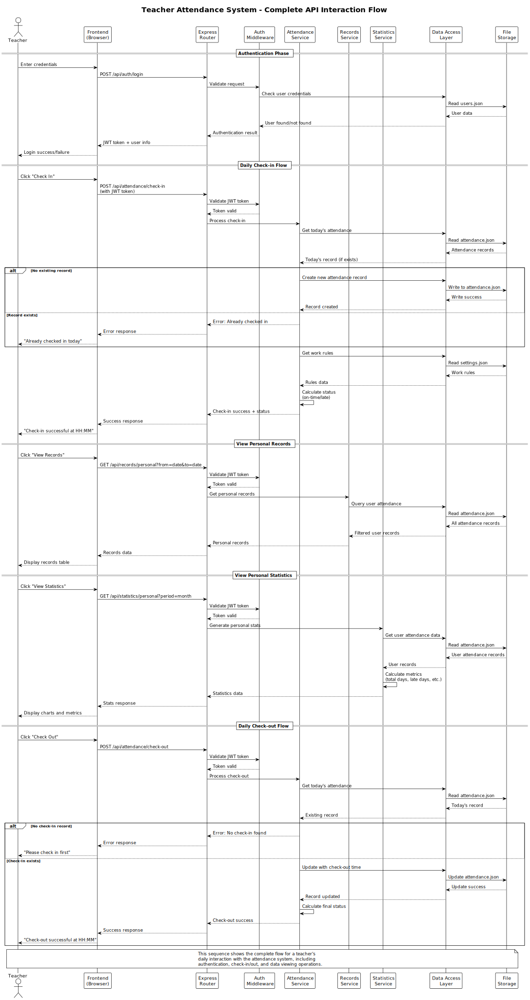

System Architecture
Dual-Mode Workflow Design
The system implements two distinct workflow patterns to accommodate different development scenarios and complexity levels. The single-agent approach utilizes role-switching mechanisms, while the multi-agent approach employs parallel collaboration patterns.

Figure 1: Single-agent multi-role workflow with 7 specialized roles

Figure 2: Multi-agent collaborative workflow with 9 specialized agents
Implementation Framework
CrewAI Integration
The multi-agent system is implemented using CrewAI framework, providing structured agent definitions, task orchestration, and inter-agent communication mechanisms.
# Agent Definition Example
from crewai import Agent, Task, Crew
requirements_agent = Agent(
role='Requirements Analyst',
goal='Analyze and refine user requirements, create prioritized requirement lists',
backstory='Experienced requirements analyst skilled at converting vague user requirements into clear functional specifications.',
verbose=True
)
# Task Definition
requirements_task = Task(
description='Analyze user requirements and generate structured requirement documents',
agent=requirements_agent
)
PlantUML Diagram Generation
The system generates standardized PlantUML diagrams with comprehensive syntax validation and naming conventions. Each diagram includes detailed explanations and follows enterprise-grade formatting standards.
Generated UML Examples
System Architecture Diagram
Layered architecture design demonstrating system component relationships and dependencies across presentation, API gateway, security, business logic, data access, utility, and storage layers.

Figure 4: Teacher attendance system layered architecture
API Interaction Sequence
Complete API interaction flow showing authentication, check-in/check-out processes, record viewing, and statistical analysis with all system component interactions.

Figure 5: Complete API interaction sequence diagram
Technical Contributions
Workflow Design Innovation
• Dual-Mode Architecture: First implementation combining single-agent role-switching with multi-agent collaboration
• Complete Development Lifecycle: End-to-end AI-driven development process from requirements to deployment
• Enterprise-Grade Output: Standardized UML diagrams and documentation meeting industrial standards
Technical Implementation
• Scalable Design: Modular architecture supporting easy addition of new agent roles and functionalities
• Practical Templates: Ready-to-use prompt templates applicable to any LLM
• Standardization: Adherence to UML standards and software engineering best practices
• Agile Support: Iterative development process design with continuous integration
Academic and Practical Value
• Academic Contribution: Undergraduate thesis project demonstrating AI innovation in software engineering automation
• Efficiency Enhancement: Automated requirements analysis and system design, significantly improving development efficiency
• Quality Assurance: Standardized design processes ensuring output quality and consistency
• Open Source Impact: MIT-licensed solution providing reusable framework for AI+software engineering community
Conclusion
The NL2BP system represents a significant advancement in AI-driven software engineering automation. By combining single-agent role-switching with multi-agent collaboration patterns, the system provides a comprehensive solution for converting natural language requirements into standardized UML blueprints. The implementation demonstrates practical applicability in enterprise environments while contributing to the academic understanding of AI applications in software engineering. The open-source nature of the project enables further research and development in this emerging field.